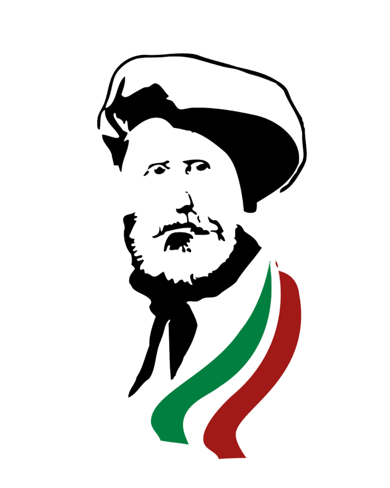
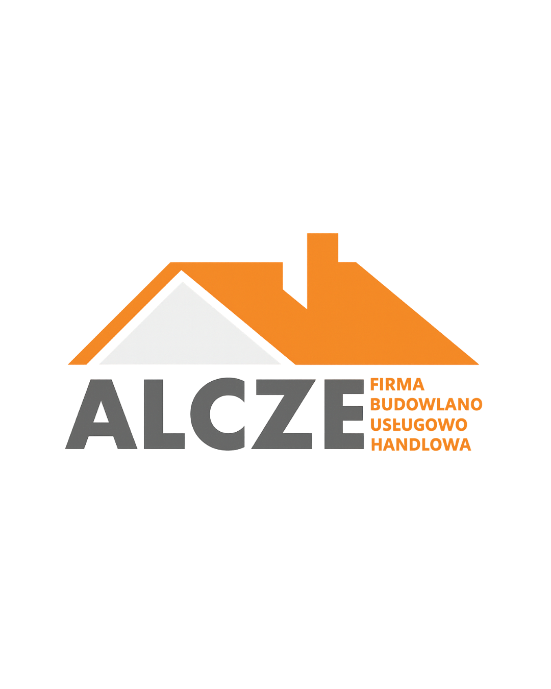
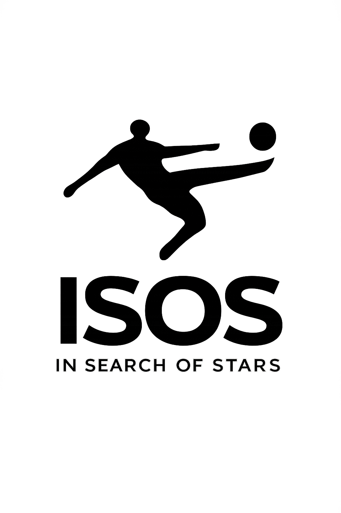

Patrocinio oficial
Presencia de marca y activaciones acordadas con el club.
Crece con la manada
Buscamos empresas y organizaciones que quieran apoyar el proyecto deportivo y la comunidad de Bisontes DUX. Prepararemos propuestas de colaboración adaptadas a cada entidad, sin compromisos ni cifras prefabricadas.
Hablar con el clubPresencia de marca y activaciones acordadas con el club.
Acciones conjuntas, servicios o apoyo a iniciativas concretas.
Solicita el futuro dossier comercial y una propuesta a medida.
Quienes ya nos apoyan
Asociación sin ánimo de lucro que busca equipos para jóvenes en riesgo de exclusión

Cadena de restaurantes de comida tradicional sarda en Madrid

Empresa de construcción en Polonia

In Search Of Stars - Agencia deportiva que se encarga de asegurarse que las estrellas estén en su lugar.

Tienda de informática en la Calle Gaztambide.
Cuéntanos qué tipo de colaboración te interesa.
bisontes.dux@gmail.com